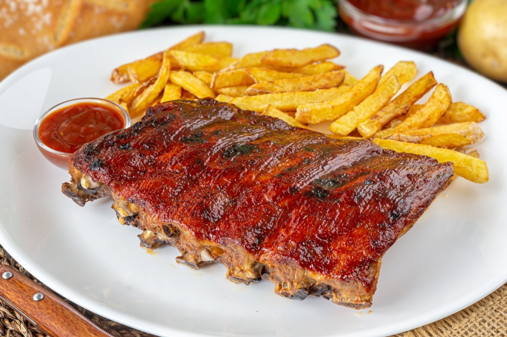
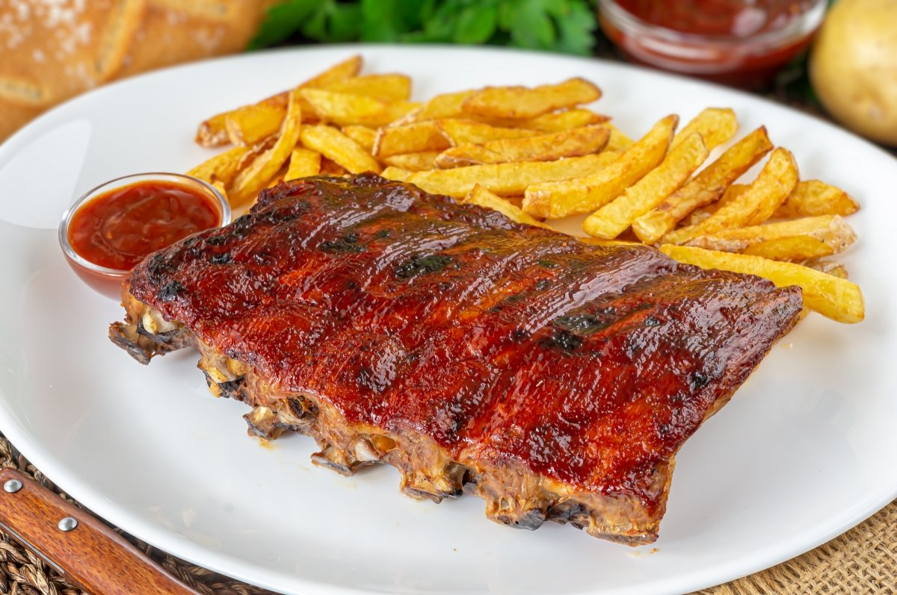

Conoce nuestra historia
¡Bienvenido a Rotisería La Tata! Somos una rotisería familiar que se ha convertido en un lugar de referencia para los amantes de la comida casera y sabrosa.
Nuestra historia comenzó hace más de 20 años, cuando nuestro fundador, Juan, decidió compartir su pasión por la cocina y abrir las puertas de nuestra rotisería. Desde entonces, nos hemos dedicado a ofrecer platos caseros de alta calidad, preparados con ingredientes frescos y amor.
En Rotisería La Tota, nos enorgullece ofrecer una amplia variedad de platos tradicionales y auténticos. Nuestro menú incluye deliciosas opciones para todos los gustos, desde clásicos como empanadas, milanesas y pastas, hasta platos especiales como guisos y asados. Además, ofrecemos opciones vegetarianas y sin gluten para satisfacer las necesidades de nuestros comensales.
Además de nuestro servicio en el local, también ofrecemos servicio de entrega a domicilio para que puedas disfrutar de nuestros platos en la comodidad de tu hogar.
Algunas de nuestras comidas:

 
